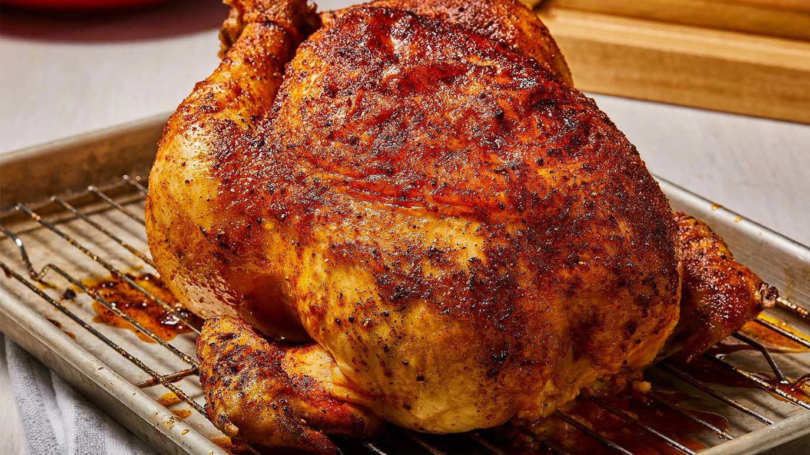
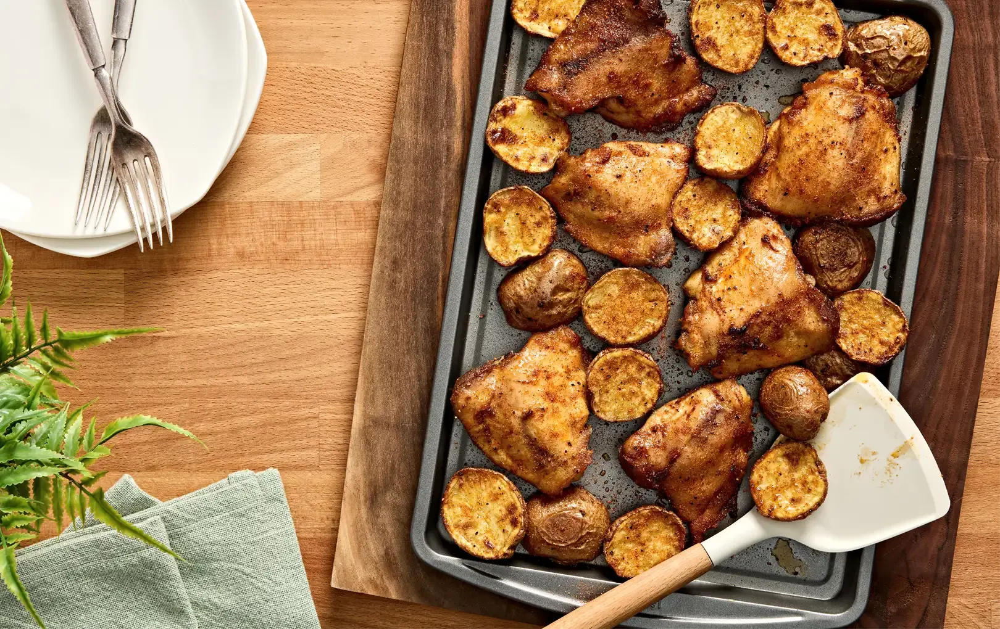

ROTISSERIE CHICKEN RECIPE
PREP TIME:5m
COOK TIME:1h 30m.
INGREDIENTS:3
SERVINGS:10

INGREDIENTS
- 1 tablespoon oil
- 1 whole chicken (3 to 3 1/2 pounds)
-
2 tablespoons McCormick® PERFECT PINCH Rotisserie Chicken Seasoning
Instructions
-
Preheat oven to 375°F. Rub oil all over chicken.
Sprinkle Seasoning over chicken. Place on rack
in roasting pan.
-
Roast for 1 to 1 1/2 hours until chicken is cooked
through (internal temperature of breast reaches 170°F
and thigh is 180°F).
INSTANT POT PULLED PORK
PREP TIME:10m
COOK TIME:1h 30m.
INGREDIENTS:7
SERVINGS:8

INGREDIENTS
-
1 package McCormick® Slow Cooker Barbecue Pulled Pork
Seasoning Mix
- 1/2 cup French's® Tomato Ketchup Squeeze Bottle
- 1/2 cup firmly packed brown sugar
- 1/3 cup cider vinegar
- 1 tablespoon oil
-
3 pounds boneless pork shoulder roast, trimmed and cut
into 2 pieces
- 1/3 cup water
Instructions
-
Mix Seasoning Mix, ketchup, brown sugar, and vinegar
in a bowl until blended; set aside.
-
Heat oil in Instant Pot on SAUTÉ function. Place pork
in pot. Cook for 5 minutes or until lightly browned,
turning once. Add water. Pour in sauce mixture. Close
lid. Set Valve to Seal.
-
Set to cook for 60 minutes on the MEAT/STEW function or
until pork pulls apart easily. When done, quick release
the pressure. Open the lid once the pressure inside
the pot is completely released. (Check manufacturer's
manual for safe operating instructions.)
-
Remove pork and place in a bowl. Shred pork, using 2
forks. Return pork to Instant Pot. Mix with sauce
before serving. Serve on sandwich or slider rolls,
if desired.
ROTISSERIE ROASTED CHICKEN WITH POTATOES
PREP TIME :10m
COOK TIME: 30m.
INGREDIENTS:4
SERVINGS:6

INGREDIENTS
- 2 tablespoons olive oil
-
4 teaspoons McCormick® PERFECT PINCH Rotisserie Chicken Seasoning
- bone-in chicken thighs, skin removed (about 2 pounds)
- 1 1/2 pounds red potatoes, cut into 1-inch cubes
Instructions
-
Preheat oven to 425°F. Mix oil and Seasoning in a large
bowl. Add chicken and potatoes; toss to coat well.
-
Place chicken and potatoes in a single layer on a
foil-lined 15x10x1-inch baking pan sprayed with
no-stick cooking spray.
-
Bake for 30 minutes or until chicken is cooked through
and potatoes are tender, turning potatoes occasionally.